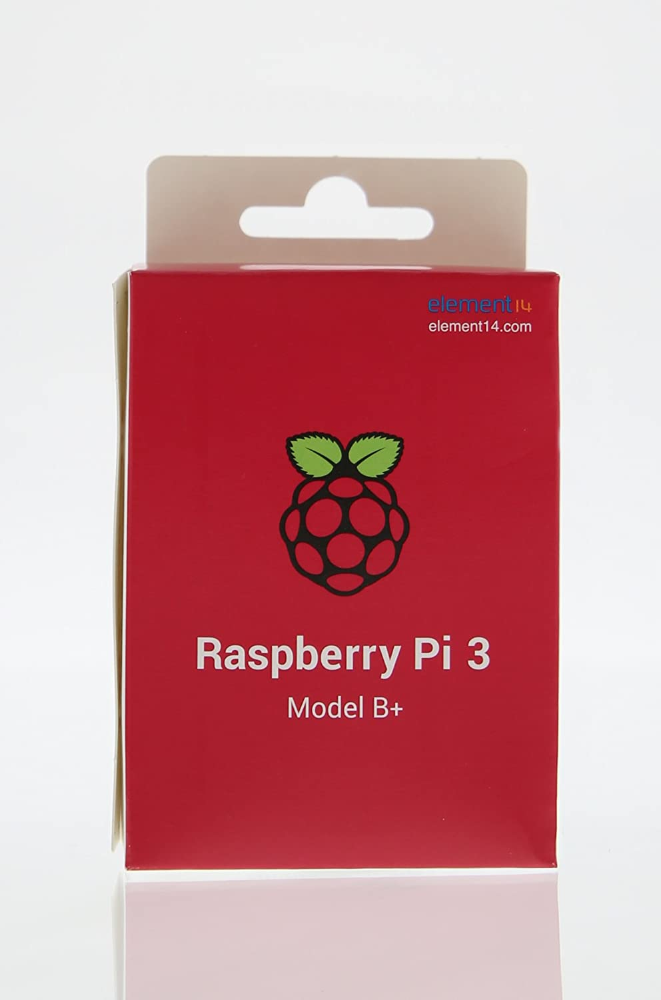

I miei interessi principali
Sono piuttosto affascinato da vari aspetti dell'informatica ed elettronica. Spesso mi dedico a progetti vari, come quelli sul mio profilo github, che possono spaziare da un orologio che parla in "dialetto" a un robottino di cartone con le ruote. Posseggo anche un RaspberryPi 3B+ e un paio di ESP8622 con cui ho realizzato alcuni progetti.
Mi piace anche essere a contatto con la natura, ed infatti faccio spesso (quando possibile) passeggiate nei boschi lungo i sentiri di montagna. Da mio nonno ho anche un orto e vari alberi da frutto fra cui peschi, meli, ciliegi e limoni.
Inoltre non disdegno dedicare parte delle mie giornate a giocare con alcuni videogames 😅. Ho anche sviluppato un
plugin(server side) per Minecraft compatibile con spigot tempo fa.
Mi piacciono anche i giochi di ruolo, come Dungeon and Dragons, infatti quando possibile gioco con amici a campagne varie. In una piovosa domenica pomeriggio ho anche tentato di creare un bot per Discord per emulare vari lanci di dado.